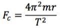
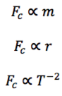

For at holde et legeme med massen 𝑚 fast i en jævn cirkelbevægelse, kræves en kraft 𝐹𝑐 rettet mod centrum af størrelsen:
hvor 𝑟 er cirkelbanens radius, og 𝑇 er omløbstiden. Kraften 𝐹𝑐 kaldes centripetalkraften. Øvelsens formål er at eftervise denne formel. Der bruges et apparat som på billedet. Motorens omløbshastighed kan reguleres vha. en strømforsyning, vognens masse kan varieres ved at lægge lodder på, og cirklens radius kan varieres ved at hæve eller sænke kraftmålerens ophængningskrog. Centripetalkraften aflæses på dynamometret. Radius måles nemmest efter at motoren er standset, ved at trække vognen ud, til kraftmåleren viser det samme som under rotationen. Omløbstiden måles vha. en fotocelle.
Lav tre måleserier med det formål at teste de tre proportionaliteter:
Plot måleserierne i hver sit koordinatsystem og udfør passende regression. Undersøg om proportionalitetskonstanterne stemmer med teorien. (For sammenhængen 𝐹𝑐 ∝ 𝑇 −2 kan det være en fordel at lave et lineariseret plot.)